Aprender la filosofía y funciones básicas del paquete de visualización de datos {ggplot2}.
Entender y aplicar funciones avanzadas de {ggplot2}.
Ser capaces de generar gráficos publicables en un artículo científico.
Figure 1: Modelo de ciencia de datos de Hadley Wickham, Mine Çetinkaya-Rundel y Garrett Grolemund. Traducido de https://r4ds.hadley.nz/intro#fig-ds-diagram
2 Introducción
La visualización de datos es una disciplina cuyo fin es mapear datos de forma gráfica para comunicar un mensaje. En investigación se usa principalmente en los análisis exploratorios (durante la fase de entendimiento de los datos) y en la comunicación de los resultados.
La representación gráfica de nuestras ideas o resultados de investigación es esencial para comunicar de forma efectiva nuestra interpretación de los datos y es clave si queremos causar cierto impacto en el interlocutor. El hombre de Vitruvio de Leonardo Da Vinci, el árbol de la vida de Charles Darwin o la primera foto de la doble hélice del ADN de Rosalind Franklin son visualizaciones de conceptos que han cambiado profundamente nuestro entendimiento del mundo y ejemplos de la importancia de la visualización de las ideas.
Algunos estudios sugieren que el tiempo medio que el usuario emplea en ojear una página web es de unos segundos, pero si hay algo que consigue atraer su atención entonces el tiempo se incrementa exponencialmente. Este atractor en el mundo científico puede ser un buen gráfico de resultados o un buen resumen gráfico.
Esquema conceptual de un “buen gráfico” considerando la ejecución (cómo de bien está constituido) y la adecuación (qué estoy tratando de decir, a quién, dónde, por qué). Modificado de Good Charts de Scott Berinato.
En este bloque vamos a aprender como representar de manera efectiva muestros datos utilizando el paquete {ggplot2} de tidyverse. {ggplot2} permite hacer gráficos razonablemente claros y estéticamente bonitos (es decir, bien ejecutados) con poco tiempo y un esfuerzo pequeño. Es extremadamente flexible y potente por lo que ha alcanzado gran popularidad.
{ggplot2} está escrito en R siguiendo la gramática de gráficos (gg). Por ello, al utilizarlo, el usuario tiene que pensar como cuando está haciendo un dibujo a mano y pensar en ir añadiendo diferentes capas a la creación. El flujo de trabajo es crear un gráfico vacío, añadir una capa con los datos, añadir una capa con las etiquetas, etc.
Creación de una pintura por capas, como en la gramática de gráficos. https://www.donnacowan.ca/category/animated-gifs/
Otra característica de {ggplot2} además del trabajo por capas es que precisa de datos ordenados para que se ejecute de forma óptima.
💡Recordamos que en una tabla de datos ordenados (Tidy data) cada columna representa una variable, cada fila es una observación y cada celda contiene un único valor.
Se necesitan tres capas básicas para crear un gráfico con {ggplot2}:
Los datos (data).
Las geometrías (geom): definen el tipo de gráfico (de puntos, de barras, etc.).
Los aesthetics: características visuales de las geometrías (p. ej. la posición, el color) definidas por las variables de nuestros datos.
Las capas se conectan entre sí con el símbolo +, que siempre debe ir colocado al final de la línea de código si queremos seguir añadiendo capas al gráfico. Todas las capas que se pueden incluir están recogidas en la guía de {ggplot2} de Posit.
💡 Se utiliza el símbolo + porque {ggplot2} es anterior al pipe (|>) y cambiar + por el pipe requeríría muchos reajustes en un montón de paquetes.
library(tidyverse)# install.packages("titanic")#Cargamos los datostitanic <- titanic::titanic_train head(titanic)
PassengerId Survived Pclass
1 1 0 3
2 2 1 1
3 3 1 3
4 4 1 1
5 5 0 3
6 6 0 3
Name Sex Age SibSp Parch
1 Braund, Mr. Owen Harris male 22 1 0
2 Cumings, Mrs. John Bradley (Florence Briggs Thayer) female 38 1 0
3 Heikkinen, Miss. Laina female 26 0 0
4 Futrelle, Mrs. Jacques Heath (Lily May Peel) female 35 1 0
5 Allen, Mr. William Henry male 35 0 0
6 Moran, Mr. James male NA 0 0
Ticket Fare Cabin Embarked
1 A/5 21171 7.2500 S
2 PC 17599 71.2833 C85 C
3 STON/O2. 3101282 7.9250 S
4 113803 53.1000 C123 S
5 373450 8.0500 S
6 330877 8.4583 Q
# PassengerId: Id del pasajero# Survived: 1-si, 0-no# Pclass: clase del pasajero# Name: nombre Name# Sex: sexo# Age: edad# SibSp: numero de hermanos + parejas a bordo# Parch: numero de progenitores + hijos a bordo# Ticket: numero de billete# Fare: tarifa# Cabin: camarote# Embarked: puerta de embarqueggplot(data = titanic)
ggplot(data = titanic, aes(x = Age, y = Fare))
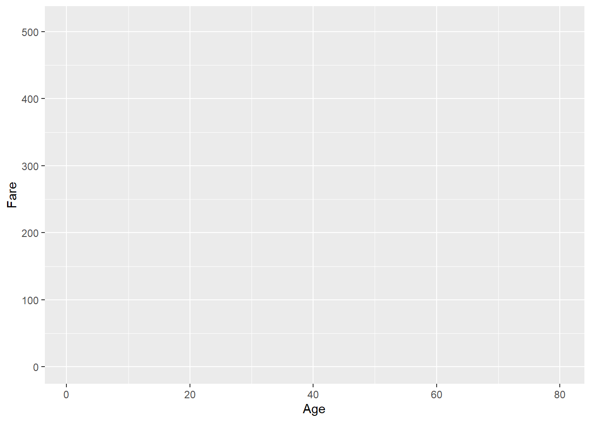
ggplot() +geom_point(data = titanic, aes(x = Age, y = Fare)) #Los datos se pueden colocar dentro de la funcion ggplot si se van a usar los mismos en todas las geometrias
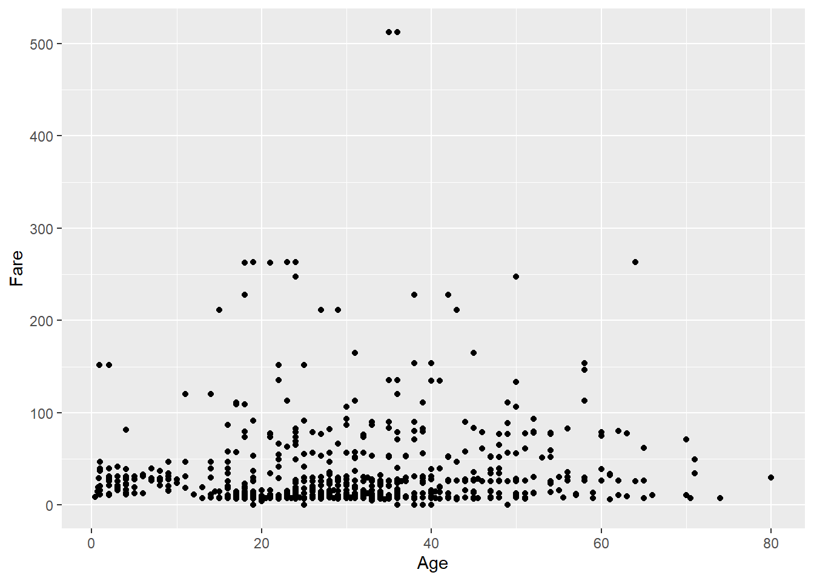
ggplot() +geom_jitter(data = titanic, aes(x = Pclass, y = Fare))
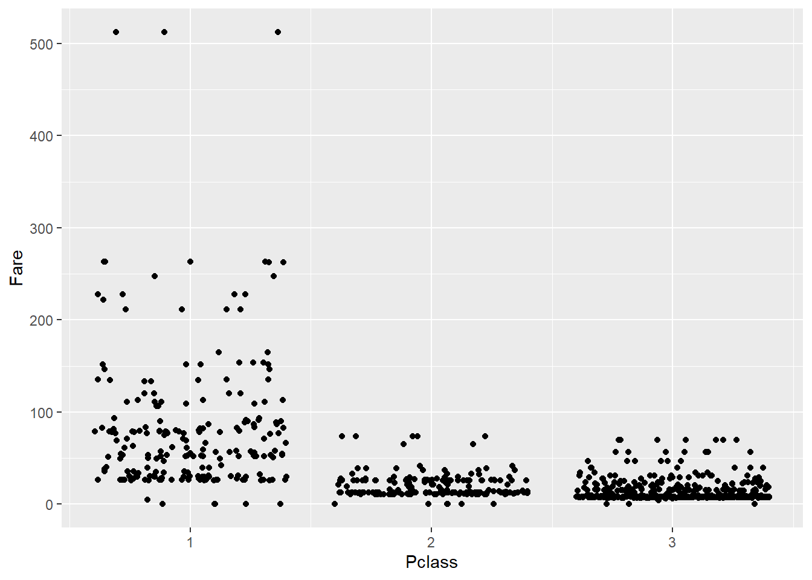
# Como guardar plots satisfactoriosplotqmegusta <-ggplot() +geom_point(data = titanic, aes(x = Age, y = Fare))ggsave(filename ="farebyage.jpg", plot = plotqmegusta, width =12, height =9, units ="cm", dpi =300)ggsave(filename ="farebyage.pdf", plot = plotqmegusta, width =12, height =9, units ="cm")
💡Algunas revistas científicas dan especificaciones muy detalladas sobre cómo tienen que ser los gráficos (p. ej. Science). Cuando no tenemos una referencia clara recomendamos pensar en formato A4 (21 x 29,7 cm) y que todos los elementos visuales del gráfico queden visibles cuando se guarda dentro de estos límites de tamaño.
3.0.1 Ejercicio
Representa un gráfico para ver la relación entre el sexo de los pasajeros y la clase.
3.1 Aesthetics vs. argumentos
Los aesthetics cambian cada elemento de las geometrías. Los argumentos estéticos cambian toda la geometría en conjunto.
ggplot(data = titanic) +geom_point(aes(x = Age, y = Fare, color = Sex))
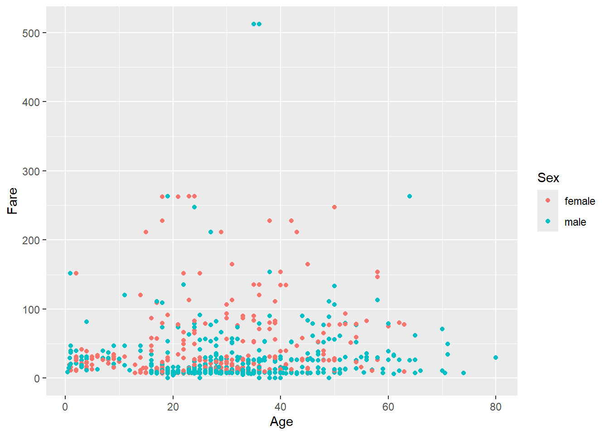
# No es lo mismo que... ggplot(data = titanic) +geom_point(aes(x = Age, y = Fare), color ="darkred")
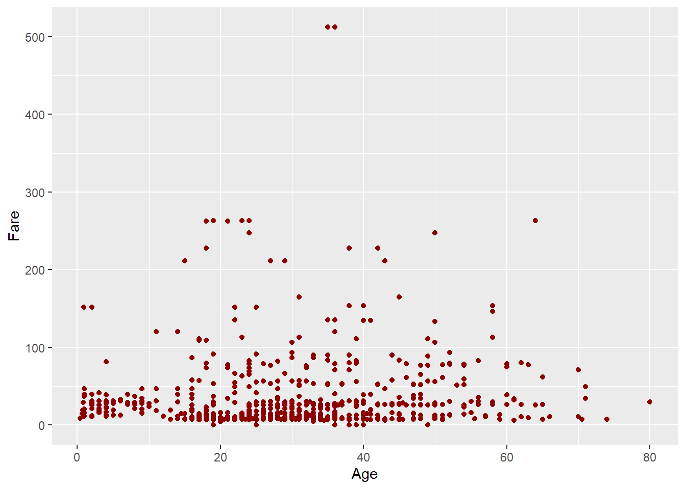
En la ayuda de las funciones de {ggplot2} aparece una lista de los aesthetics y los argumentos estéticos que acepta esa función. Se pueden incluir tantos aesthetics como se deseen.
ggplot(data = titanic) +geom_point(aes(x = Age, y = Fare, size = Pclass, shape = Sex, color = Embarked))
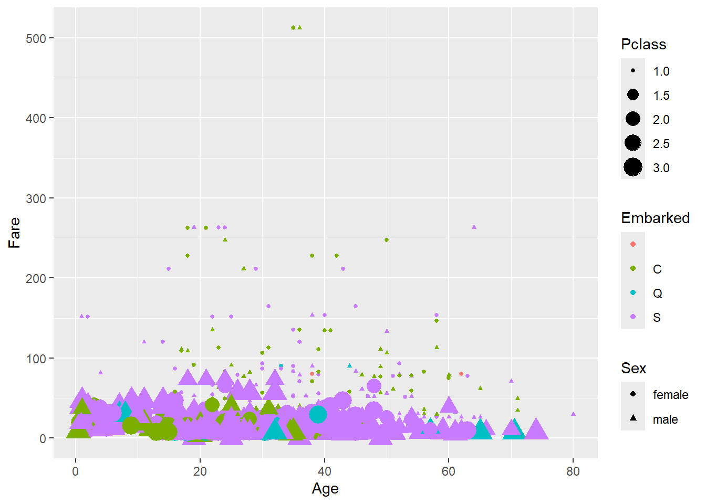
summary(titanic$Pclass)
Min. 1st Qu. Median Mean 3rd Qu. Max.
1.000 2.000 3.000 2.309 3.000 3.000
💡ggpairs() de {GGally} permite hacer gráficos multipanel donde, de un vistazo, se ve la distribución de cada variable dentro de una base de datos y la relación de las variables todas entre sí. Es muy útil en exploración de datos.
💡Los correlogramas, gráficos cuadrados o triangulares que representan matrices de correlaciones entre variables, son muy útiles para resumir en un vistazo las relaciones entre las variables de una base de datos. En este artículo encontrarás tutoriales para realizarlos utilizando diferente paquetes.
Los gráficos interactivos de ggplotly() pueden ser muy útilies también en la exploración de datos. Fijate en el siguiente ejemplo.
# install.packages("plotly")library(plotly)
Warning: package 'plotly' was built under R version 4.3.3
Attaching package: 'plotly'
The following object is masked from 'package:ggplot2':
last_plot
The following object is masked from 'package:stats':
filter
The following object is masked from 'package:graphics':
layout
ggplotly(pnum)
4.3.4 Variable cualitativa vs. cuantitativa
ggplot(data = titanic) +geom_boxplot(aes(x = Pclass, y = Age))
💡Echa un vistazo al paquete {ggdist} y los raincloud plots para combinar diferentes geoms relacionadas con la distribución de los datos.
5 {Ggplot2}: funciones avanzadas
5.1 Etiquetas
pnumcat <-ggplot(data = titanic) +geom_boxplot(aes(x = Pclass, y = Age))pnumcat
pnumcat +labs(title ="Edad de los pasajeros según su clase", x ="Clase", y ="Edad (años)") #title, subtitle, x, y, caption
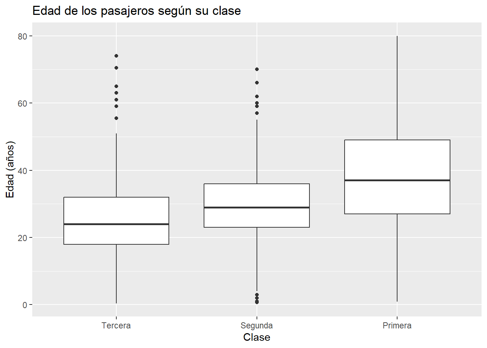
5.2 Sistema de coordenadas
El sistema de coordenadas por defecto en un gráfico de ggplot() es el cartesiano. Si queremos hacer zoom en nuestro gráfico tendremos que cambiar los límites del sistema de coordenadas.
pnumcat +coord_cartesian(ylim =c(0, 100))
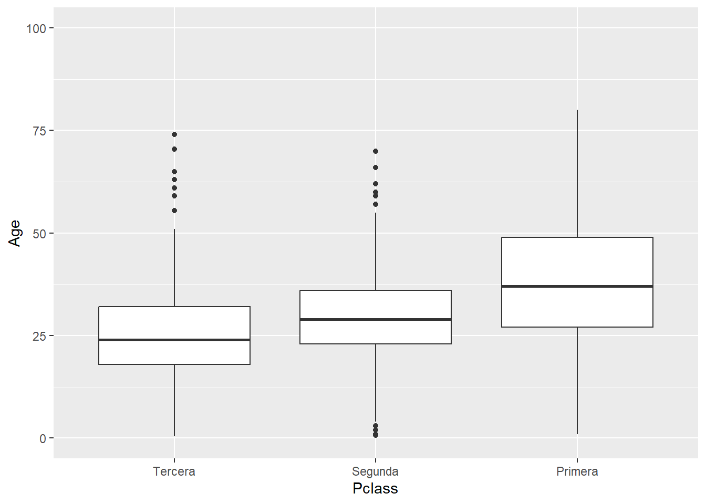
5.2.1 Ejercicio
Cambia la posición de los ejes X e Y en el sistema de coordenadas de pnumcat.
5.3 Faceting
Los facets dividen el gráfico en subgráficos basados en el valor de una o varias variables categóricas. Las facetas son muy útiles en exploración de datos. Hay dos funciones para facetar: facet_grid() y facet_wrap().
miplot2 <-ggplot(data = titanic, aes(x = Age, y = Fare, color = Sex)) +geom_point()miplot2
Con las funciones y argumenos de posición podemos recolocar geometrias que de otro modo ocuparían el mismo espacio.
ggplot(data = titanic) +geom_bar(aes(x = Pclass, fill = Sex))
ggplot(data = titanic) +geom_bar(aes(x = Pclass, fill = Sex), position ="dodge") #esquivar
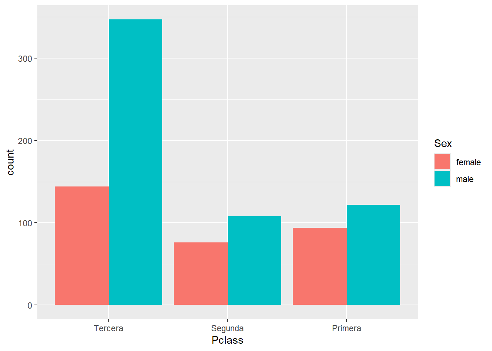
ggplot(data = titanic) +geom_bar(aes(x = Pclass, fill = Sex), position ="fill") #rellenar
5.5 Escalas
Sirven para personalizar los aesthetics. Las funciones de la familia scale siempre tienen la misma estructura: scale_aesthetic que se personaliza con _ tipo de escala (p. ej. continua, discreta, manual, etc.).
Un error muy común es cambiar los ejes del gráfico con las funciones scale_x_continuous() o scale_y_continuous() cuando lo que queremos es hacer zoom. Fijate en las diferencias en el siguiente ejemplo.
ggplot(data = titanic) +geom_boxplot(aes(x = Pclass, y = Age))
¿Qué harías para cambiar la escala de la edad a un degradado de colores de azul a amarillo en el siguiente gráfico?
5.6 Los colores en R
Las paletas de colores tipo manual y gradient se personalizan con el nombre o código del color. Con esta herramienta puedes elegir entre cientos de colores.
Las paletas tipo brewer y distiller utilizan paletas de colores que pueden ser secuenciales, cualitativas o divergentes, que aunque tienen utilidad en gran variedad de situaciones, están diseñadas para trabajar con mapas o a escalas pequeñas.
Las paletas HCL (hue-chroma-luminance) son paletas muy populares que tienen su propia función (p. ej. colores para representar batimetría). De entre ellas, Viridis se he vuelto muy popular porque está diseñada para que personas con distintos tipos de daltonismo puedan distinguir los colores.
RColorBrewer::display.brewer.all()
RColorBrewer::brewer.pal(name ="Set3", n =6) # para crear paleta
hcl.cl> require("graphics")
hcl.cl> # color wheels in RGB/HSV and HCL space
hcl.cl> par(mfrow = c(2, 2))
hcl.cl> pie(rep(1, 12), col = rainbow(12), main = "RGB/HSV")
hcl.cl> pie(rep(1, 12), col = hcl.colors(12, "Set 2"), main = "HCL")
hcl.cl> par(mfrow = c(1, 1))
hcl.cl> ## color swatches for RGB/HSV palettes
hcl.cl> demo.pal <-
hcl.cl+ function(n, border = if (n < 32) "light gray" else NA,
hcl.cl+ main = paste("color palettes; n=", n),
hcl.cl+ ch.col = c("rainbow(n, start=.7, end=.1)", "heat.colors(n)",
hcl.cl+ "terrain.colors(n)", "topo.colors(n)",
hcl.cl+ "cm.colors(n)"))
hcl.cl+ {
hcl.cl+ nt <- length(ch.col)
hcl.cl+ i <- 1:n; j <- n / nt; d <- j/6; dy <- 2*d
hcl.cl+ plot(i, i+d, type = "n", yaxt = "n", ylab = "", main = main)
hcl.cl+ for (k in 1:nt) {
hcl.cl+ rect(i-.5, (k-1)*j+ dy, i+.4, k*j,
hcl.cl+ col = eval(str2lang(ch.col[k])), border = border)
hcl.cl+ text(2*j, k * j + dy/4, ch.col[k])
hcl.cl+ }
hcl.cl+ }
hcl.cl> demo.pal(16)
# Viridis ggplot(data = titanic, aes(x = Age, y = Fare, color = Age)) +geom_point() +scale_color_gradientn(colours =hcl.colors(12, "viridis"))ggplot(data = titanic, aes(x = Age, y = Fare, color = Age)) +geom_point() +scale_color_viridis_c()
💡Aquí puedes encontrar más información sobre cómo utilizar colores en {ggplot2}.
5.7 Temas
theme() permite la personalización completa de todos los elementos del gráfico. Los argumentos dentro de la función definen la parte del gráfico a cambiar. Se les asigna una función de cambio según el elemento a cambiar dentro de esa parte (parte.del.gráfico = elemento_a_cambiar(…)): line, rect, text.
?thememiplot2 +theme(axis.title.x =element_text(color ="red", face ="bold"))
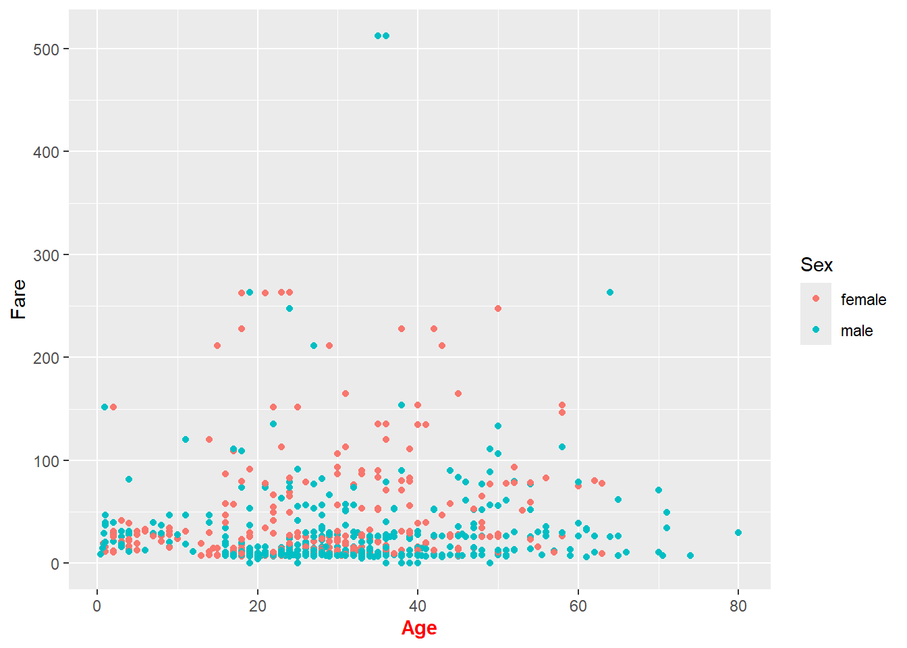
5.7.1 Ejercicio
Dibuja una linea negra que represente los ejes de miplot y quita el fondo del gráfico.
Existen temas configurados por defecto y un asistente que te ayuda a personalizar el gráfico.
En este enlace puedes ver cómo personalizar mucho más la disposición de los diferentes elementos de la composición.
7 Mapas
La representación de mapas es sencilla con {ggplot2} si conseguimos transformar los datos espaciales en una tabla de datos ordenada.
Mapas en formato vectorial y en formato raster. https://commons.wikimedia.org/wiki/File:Vectores_vs_rasters.png
7.1 Raster
#install.packages(c("terra", "easyclimate))library(terra)library(easyclimate)# Obtenemos datos de temperatura máxima para el 31 de diciembre de 2020 en una zona de España raster <-get_daily_climate(coords =vect("POLYGON ((-4.5 41, -4.5 40.5, -5 40.5, -5 41))"), period ="2020-12-31", climatic_var ="Tmax", output ="raster")plot(raster)
En general, se recomienda usar geom_sf(). Cuando el mapa contiene puntos es sencillo transformarlo en formato ordenado con terra::as.data.frame() y tratarlo con geom_point(). Para líneas y polígonos es mas dificil, pero se puede como veremos en el ejemplo debajo.
# install.packages("sf")library(sf)
Warning: package 'sf' was built under R version 4.3.2
Linking to GEOS 3.11.2, GDAL 3.7.2, PROJ 9.3.0; sf_use_s2() is TRUE
vecmap <-ggplot(data = vectorial) +geom_sf(aes(fill = NAME_2), color ="white")vecmap
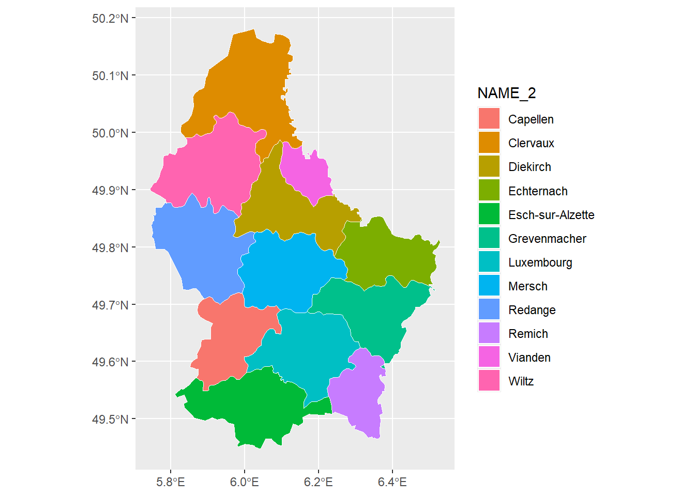
vecmap +coord_sf() +scale_fill_brewer(palette ="Set3", name ="Cantones de\nLuxemburgo") +labs(y ="Latitude", x ="Longitude") +theme_bw()
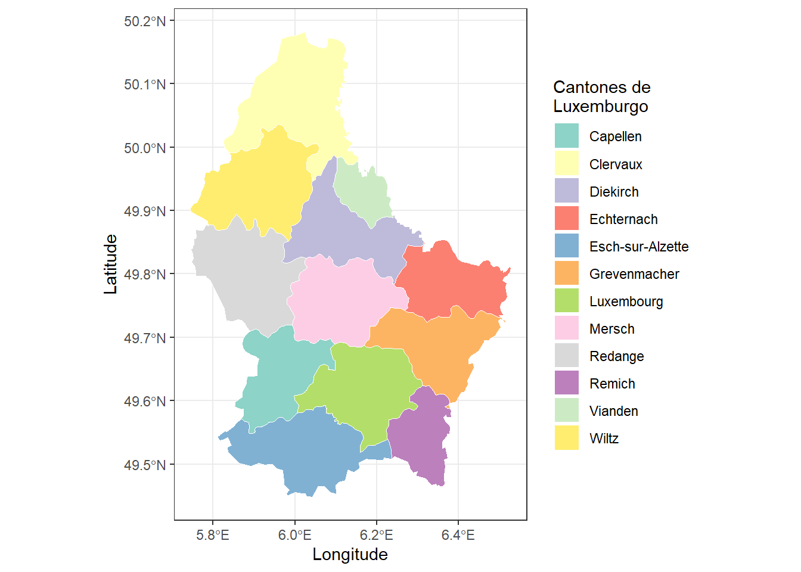
vectorial_df <- vect_terra |>geom() |>as.data.frame()ggplot(data = vectorial_df) +geom_polygon(aes(x = x, y = y, group = geom, fill =as.factor(geom)), color ="white") +scale_fill_brewer(palette ="Set3", name ="Cantones de\nLuxemburgo") +labs(y ="Latitude", x ="Longitude") +theme_bw()